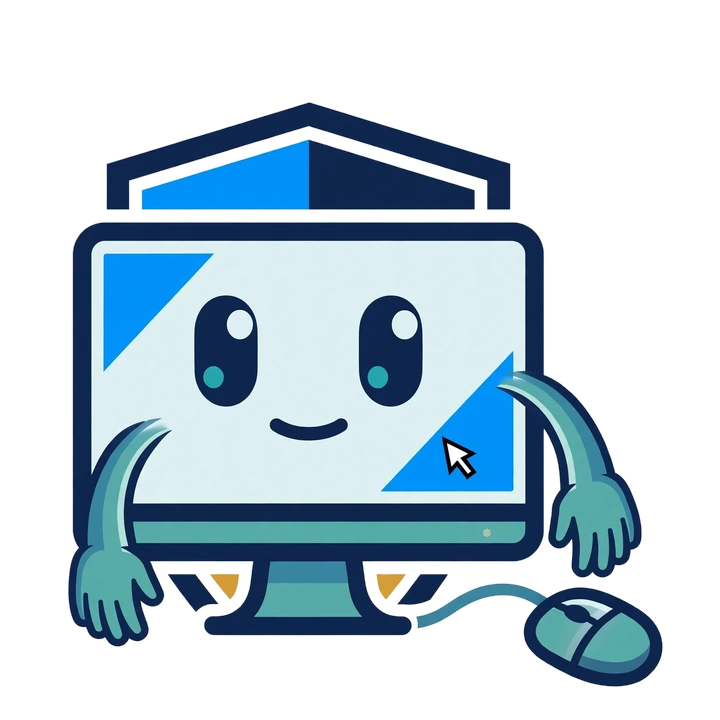

DeskGuest
DeskGuestHow DeskGuest works
A help session has three steps. Nothing happens before step 2, and you can end it at any moment during step 3.
Three steps, start to finish

Step 1Open DeskGuest
Launch the app on the device that needs help (no signup required). It sits ready and does nothing until you invite someone.
 Step 2
Step 2Invite your helper
DeskGuest shows a one-time code on the device. Give the code only to someone you trust: anyone with it can pair as your helper. It works once, and it expires in 10 minutes. Pairing is done with keys and codes — there is no link to share.
 Step 3
Step 3Watch & stop anytime
Your helper works on screen, in front of you, named the whole time. Watch them work — and press STOP, or Esc, to end it instantly.
What happens during a session
You see who is here
A box at the top of every screen names the helper — a person, or your paired AI agent — and says plainly whether they are watching or controlling. Their pointer is a ring carrying their initial, so you can always tell their pointer from yours.
Sensitive actions ask first
When a helper wants to do something sensitive, DeskGuest shows you the exact action — what it is, where it goes, what it contains — before anything happens. You can Approve it, Deny it, or Deny it and end the session. Nothing sensitive runs from a chat message alone.
You decide what each helper may do
For each AI agent you pair, you set the level: look only, full control, or a custom mix of abilities — observe, drive, shell, admin. You can fine-tune individual abilities, bound a grant by the clock, and change or remove access at any time.
Everything is written down, on your device
DeskGuest keeps a plain-language Activity Record on the device itself: who connected, what was asked, what you approved, and what was looked at, sent, or changed. It can't be quietly edited. More on trust & security
Working with an AI agent
The same session, with an agent in the helper's seat. Pairing happens once; after that, asking for help is a conversation.
Pair your agent
Pairing is your act, done on your device: the app shows a one-time code, your agent presents it, and it's paired under its own name. Then one question — "What may this agent do?" — sets its leash. Look only is the default.
Any timeAsk — from any of your devices
Message your agent in its DeskGuest chat thread, from the device in your hand. If it's your computer that needs the work, say so there: the order travels, and the agent acts on the target under that device's own pairing.
In the openApprove, watch, or don't
Anything sensitive arrives on your phone as an action card — tap to approve. On the target, presence fires in full: your agent is named, its ghost pointer works in the open, and STOP works there and on your phone. When the task is done, the agent ends its own session.
Setup that holds your hand
DeskGuest is set up by the people it protects, so setup itself is part of the product: one step per screen, explained before it's taken.
Guided, and it checks its own work
Each step deep-links to the exact Settings page it needs, and the app detects completion itself — including the extra steps some phones hide, like the restricted-settings step for sideloaded apps, and the battery-survival setting for your phone's brand, given by name. Where the system forces a hunt, you see a picture of the target screen with the control highlighted.
Stop anywhere, resume anywhere
Setup can pause at any step and resume at the exact step, days later. Your first session is guided too: the glow, the banner, the ghost, and STOP are introduced as they appear. And when setup finishes, a self-check report card states in words what was verified working — nothing is claimed working that wasn't observed working.